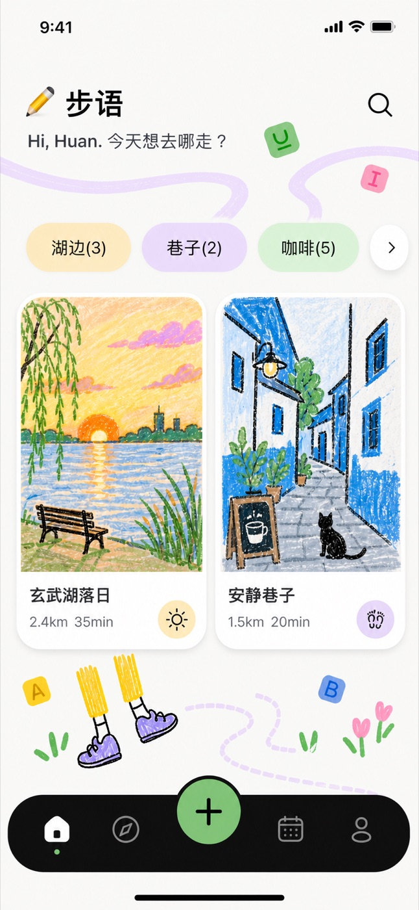
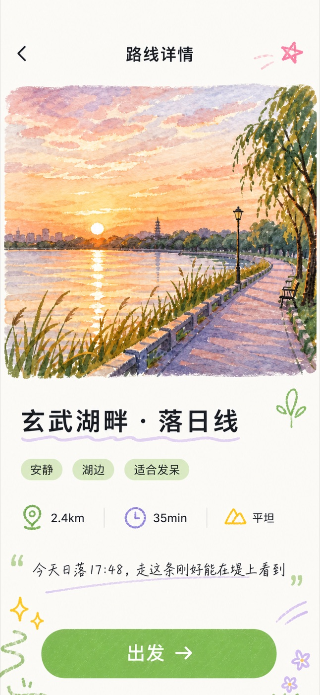
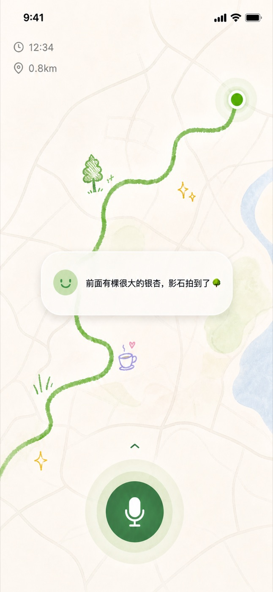
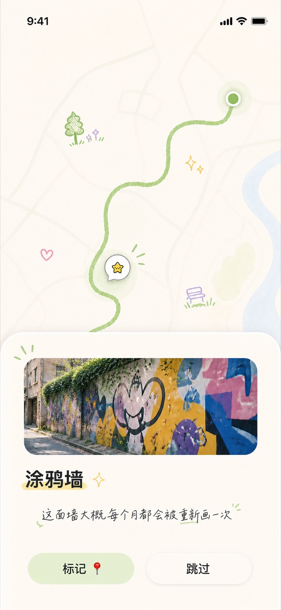
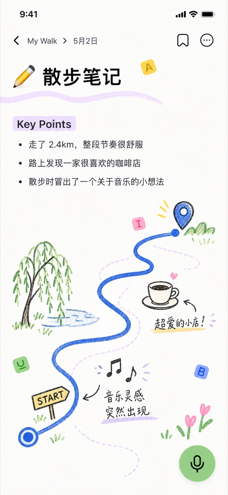
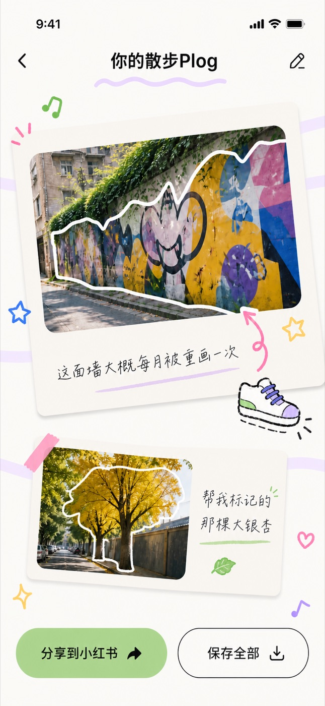

你的 AI 散步搭子 · 带上步步，今天去发现一条新的路
Character.AI 用一组数字说明了一切：当现实世界给不了的关系，年轻人会到屏幕里去找。
他们独居、久坐、宅家。有钱、有时间、有情感需求。
他们在屏幕里，和 AI 谈了 2 小时的恋爱。
它是孤独的止痛药，
不是解药。
方向，错了。
"我每天和 AI 聊 2 小时，
但已经 3 周没下楼了。"
— 某 CAI 重度用户，豆瓣小组
散步 · 晒太阳 · 感受风。
这些事 AI 替你做不了——但 AI 可以陪你一起做。
"南京的花开了" → 心动 → 但是……
去哪条街？谁陪我去？什么时候去？——三连问之后，关掉 App，继续躺。
"南京的花开了，太美了"
"好像也想去走走"
去哪？谁陪？什么时候？
关 App，外卖到家
种草到行动的最后一公里，是步语要解决的事。
打开 App，带上步步，直接出发。
一次解决三个问题：
一句话：你的 AI 散步搭子。

↑ 主屏 · 今天的路线推荐

↑ 路线详情 · 玄武湖畔落日线
手绘风地图，标注沿途真正有趣的点——
落日的角度、巷子里的猫、新开的咖啡店、最佳拍照位。
路线，是出门的第一推力。
不需要额外硬件——手机摄像头就是步步的眼睛。
抬起手机自动开启观察，放下自动关闭，像本能一样自然。
抬起手机对准大银杏 → 步步说"这棵特别大，要不要拍一张？"
路过咖啡店 → Native UI 弹卡片，"这家好评 4.8，要进去吗？"


↑ 散步中实时陪伴 · 发现路边趣点


↑ 散步笔记 + Plog · 一键分享小红书
自动生成你的散步 Plog——
路线图 + 沿途照片 + 当天金句 + 徽章。
走过的路，会留下来。
种草，但走不出去
→ 心动 → 没行动
陪伴，但留你在屏幕
→ 越聊 → 越宅
陪你走出门
→ 种草 + 陪伴 + 行动
所有的 AI 都在帮你更快地完成任务。
我们用 AI，
关注你的真实生活。
去散步、去晒太阳、去抬头看一眼这个城市的春天。
步语和步步，会在你身边。